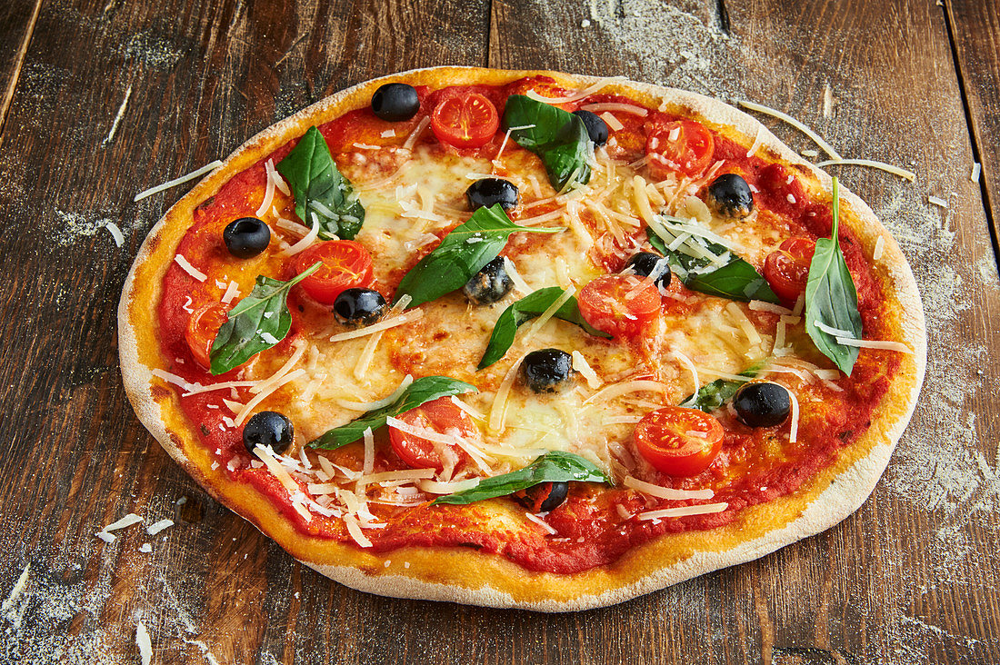

Pizza Milano

Description
Pizza Milano Recipe is regarded among the popular dishes. Read the complete Pizza Milano Recipe with ingredient details and method. It is a simple recipe and all required ingredients are easily available. Prepare the dish as per the Pizza Milano Recipe from top chefs and add the true flavor or taste to your food. You can also share this recipe with your friends and family members.
Ingredients
For pizza crust
- Plain flour 2 Ounce (60 Grams)
- Self-raising flour 2 Ounce (60 Grams)
- Salt 1⁄4 Teaspoon
- Dry mustard 1⁄4 Teaspoon (Leveled)
- Cayenne pepper 1 Pinch
- Butter/Margarine 1 Ounce (30 Grams)
- Egg 1
- Milk 2 Tablespoon
- Butter 2 Teaspoon
For filling
- Olive oil 1 Tablespoon
- Steak 4 Pound, finely minced (250 Grams)
- Tomatoes 3 Medium, coarsely chopped
- Anchovies 4 Tablespoon, finely chopped
- Onion 1 Large, finely chopped
- Garlic 1 Clove (5 gm)
- Celery 1 Tablespoon, chopped
- Parsley 1 Tablespoon, chopped
- Sharp cheese 1⁄4 Pound, grated (125 Grams)
Steps
- Preheat the oven to 375°F.
- Pizza crust : In a bowl, sift the flours, salt, mustard and cayenne together.
- Rub in the butter or margarine, until the mixture is crumbly.
- In a bowl, beat the egg and milk together.
- Stir into the flour mixture and mix to form a rather firm dough.
- Knead the dough on a floured board until smooth on the outer surface.
- Roll out the dough 1/2 inch thick, line and press the dough into the pizza plate, then dot with butter.
- Filling : In a skillet, saute the minced steak in oil until it changes colour.
- Transfer to a plate and allow the meat to cool.
- In a bowl, combine the tomatoes, anchovies, onion, garlic, celery, parsley, cheese and cooked meat together; mix thoroughly.
- Spread this meat mixture evenly over the pizza shell.
- Bake in the preheated oven for 20 to 25 minutes or until the filling is cooked and the crust brown.
- Slice the Pizza Milano into wedges and serve piping hot.